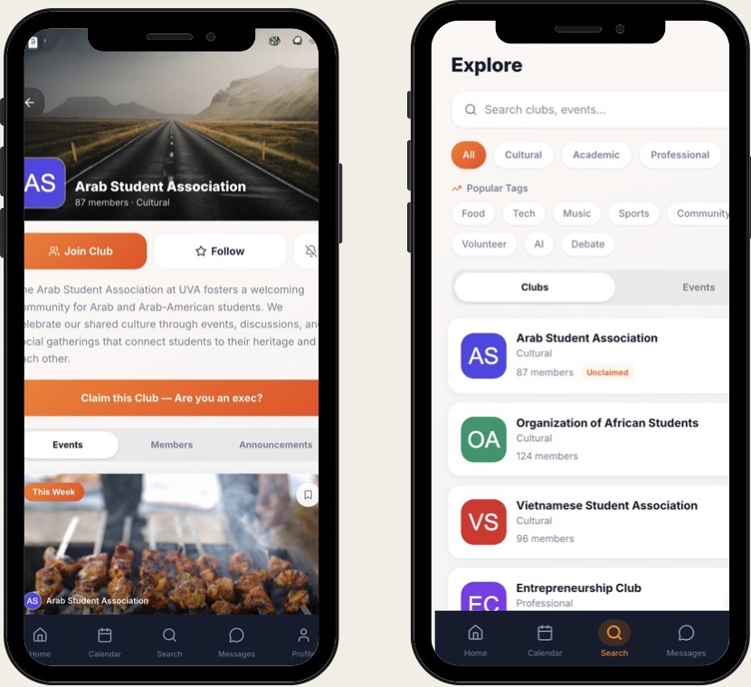
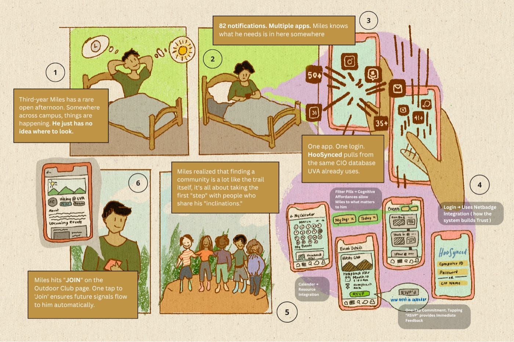
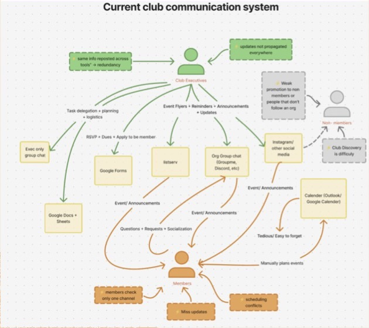
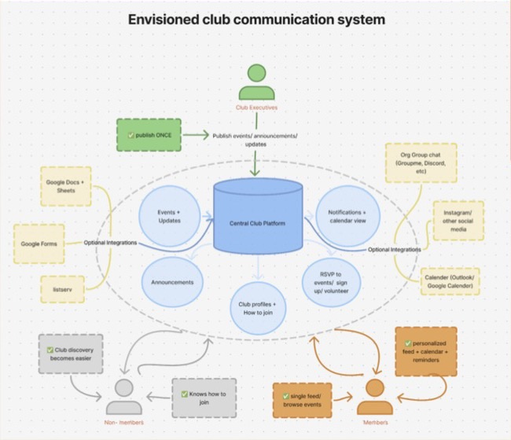
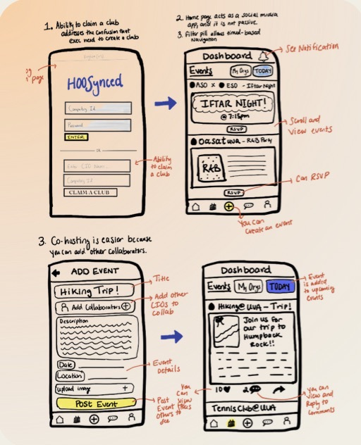
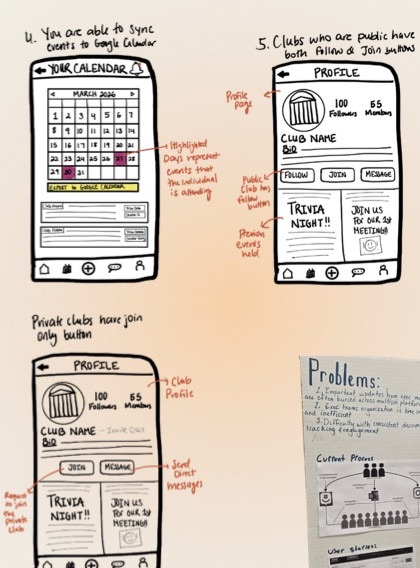
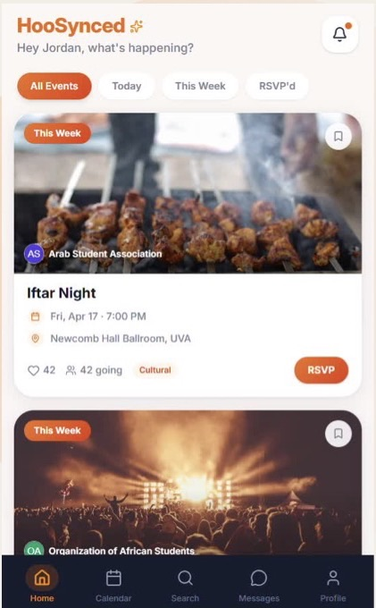
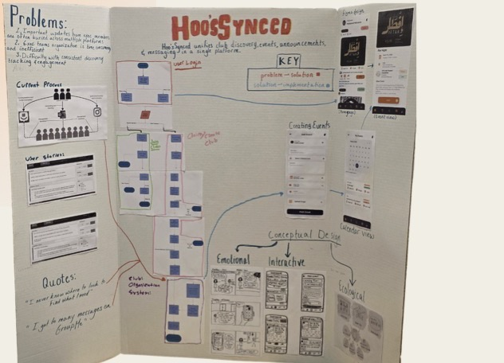

HooSynced
Redesigning club discovery at UVA. Students don’t know what clubs exist, or whether they belong there, because club info is scattered across group chats, Instagram and the official directory. We researched how clubs actually communicate, designed one shared platform, and tested it with real students.
My role: design, mental models and prototyping.

- Timeline
- Spring 2026
- Users
- Club executives, active members, non-members & first-years
- Methods
- Contextual inquiry, mental models, sketching, usability testing
- Tools
- Figma, Claude Design, Replit
01 · Problem
Club info lives everywhere, so students find nothing
At UVA, a club’s announcements might be in a GroupMe, an Instagram story, or a half-filled page on the official club directory. Members check one channel and miss the rest. Students who aren’t members yet have almost no way to find a club, or to tell whether they’d fit in.
We designed for three groups: club executives who post updates, active members who need them, and non-members and first-years trying to find their place.

02 · Research
Mapping how clubs actually communicate
Through contextual inquiry, we modeled the current system. Executives repost the same info across tools, updates don’t reach everyone, members miss events and hit scheduling conflicts, and promotion rarely reaches people who don’t already follow a club.
Our envisioned system flips that: executives publish once to a central platform, which handles events, announcements, RSVPs and club profiles, and still connects to the tools clubs already use.


03 · Design
Sketching the key decisions
- Claiming a club: execs claim their club’s page, which settles who can post for it.
- A social-style home feed, with filters to browse events quickly.
- Co-hosting: clubs add collaborators to an event instead of posting it twice.
- Calendar sync, so events go straight to Google Calendar.
- Follow vs. Join: public clubs offer both, private clubs only Join.


04 · Critique
Defending one interface for everyone
“I’m skeptical of your decision to create one system for all work roles, as an example claiming a club being part of the browsing flow.”
We kept the unified design because it matches how execs think: their mental model is “let me find my club,” not “let me open an admin tool.” So claiming happens right where they browse: find club → see the Unclaimed badge → claim → verify. It trades a little discoverability for a system everyone learns once, and in testing the claim task took just 35 seconds.
05 · Prototype
From paper to a working app
We moved from paper sketches to digital wireframes, explored layouts in Claude Design, then built a clickable prototype in Replit with a real feed, calendar, search, messages and club profiles.

06 · Evaluation
Testing with all three user groups
We ran remote sessions over Zoom with execs, members and non-members, using 6 benchmark tasks tied to the breakpoints we found in research. We measured time on task, errors, tap count, and Likert ratings for trust and satisfaction.
What we found
- Join vs. Follow was confusing. Users weren’t sure which one they needed.
- The + button was unclear. Execs struggled to find where to announce and post.
- A responsive layout issue cut off part of the claim form on smaller screens.
07 · Reflection
What I learned
- Constraints force clearer decisions.
- Higher-fidelity prototypes get more realistic feedback.
- Real-world prioritization: deciding what matters most with limited time.
- Test earlier to catch issues sooner.
